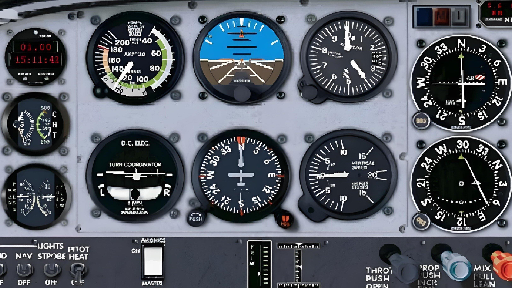
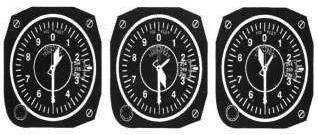
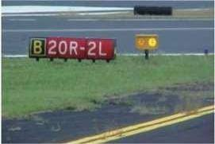

1初级
襟翼、副翼、升降舵的英文是？
A. flap aileron elevator
B. wing aileron rudder
C. flap aileron rudder
2初级
航空器依据产生向上力的方式分为两大类，轻于空气的航空器依靠【 】浮于空中。
A. 重力
B. 升力
C. 浮力
3初级
航向仪中的W指示的是哪个方向【 】
A. 东
B. 西
C. 南
D. 北
4初级
第一架飞机是谁发明的？他是哪国人？
A. 莱特兄弟 美国
B. 莱恩兄弟 美国
C. 莱特兄弟 德国
5初级
【 】不可以通过人为控制来操纵飞机的飞行状态。
A. 垂直安定面
B. 副翼
C. 方向舵
6初级
实际飞行的方向，称为【 】
A. 航线
B. 航迹
C. 航向
7初级
副翼的英文是【 】
A. Rudder
B. flap
C. aileron
8初级
舰载机起飞和着舰时，航空母舰应当？
A. 向着风来向停止向前航行
B. 向着风来向尽可能高速的向前航行
C. 顺着风来向尽可能高速的向前航行
9初级
如果跑道磁方向为268°，那么该跑道的号码为【 】
A. 270
B. 27
C. 027
10初级
气象风90度，跑道12/30，航空器在哪条跑道上降落【 】
A. 12
B. 30
C. 12/30
11初级
extra300s飞机驾驶舱有几个座位？
A. 1
B. 2
C. 3
12初级
被称为“中国导弹之父、中国火箭之父、火箭之王”的科学家是？
A. 钱学森
B. 邓稼先
C. 于 敏
13初级
飞机的操纵面不包括【 】
A. 机翼
B. 方向舵
C. 起落架
15初级
特技竞速飞行中，开启氮气加速会快速提升飞行速度，但缺点是【 】
A. 会损伤发动机
B. 难以操纵
C. 容易产生爆炸
16初级
飞机上的“黑匣子”外壳是【 】颜色。
A. 黑色
B. 黄色
C. 橙色
17初级
民航客机和直升机的机翼主要的区别是【 】
A. 带弯度的翼型和不带弯度的翼型
B. 固定的机翼和旋转的机翼
C. 可控的机翼和不可控的机翼
18初级
民用飞机不可以在哪个气层飞行【 】
A. 逃逸层
B. 对流层
C. 平流层
19初级
以下不属于航空器的是？
A. 飞机
B. 航空母舰
C. 热气球
20初级
塞斯纳172机型的发动机类型是?
A. 活塞螺旋桨
B. 涡轮喷气
C. 涡轮螺旋桨
21初级
尾翼的英文是【 】
A. Fuselage
B. wings
C. empennage
D. landing gear
22初级
飞机降落是逆风还是顺风【 】
A. 顺风
B. 逆风
C. 都可以
23初级
建国初期的朝鲜战争中，中国人民空军使用的战斗机主战机型是？
A. 米格-15
B. 米格-17
C. 苏-27
24初级
飞机在什么情况下会发生失速？
A. 只会在速度小的时候
B. 只会在速度大的时候
C. 在任何速度的时候都有可能
25初级
在机场的同一条跑道上，如果一端的标记为“15”，那么在另一端跑道的标记是【 】
A. 15
B. 24
C. 33
26初级
extra 300s 属于【 】
A. 上单翼飞机
B. 下单翼飞机
C. 旋翼飞机
27初级
Cessna 172（塞斯纳） 属于【 】式起落架飞机。
A. 前三点
B. 后三点
C. 可伸缩
28初级
能够控制飞机横滚的是（ ）。
A. 垂直安定面
B. 副翼
C. 方向舵
29初级
当姿态仪显示飞机仰角为10度，这时飞机的状态是【 】
A. 上升
B. 下降
C. 不确定
30初级
以下哪个部件不是飞机的主要结构组成部分【 】
A. 机翼
B. 起落架
C. 黑匣子
31初级
以下不属于机场“滑行道”特点的是【 】
A. 滑行道上的标志都是黄色
B. 飞机可以在滑行道上起飞或着陆
C. 滑行道的宽度由使用机场最大的飞机的轮廓宽度决定
32初级
AOA攻角(迎角)是指什么？
A. 飞机纵轴与地平线夹角
B. 飞机横轴与天地线夹角
C. 飞机机翼弦线与相对来流夹角
33初级
我国自行设计制造的第一架大型喷气式客机是【 】型号。
A. C919
B. 运十
C. ARJ21
34初级
在进近和着陆时，襟翼的主要作用是【 】
A. 允许以更大的指示空速接地
B. 增加下降坡度而不增加空速
C. 减小下降坡度而不增加空速选项
35初级
航向仪中的S指示的是哪个方向【 】
A. 东
B. 西
C. 南
D. 北
36初级
精密进近坡度指示器（PAPI）为四个灯具安放在一排，通常位于跑道左侧，如果航空器高度略低，则只有最左边一盏灯为【 】，其余三盏为【 】
A. 绿色、黄色
B. 白色、红色
C. 红色、白色
37初级
某机场有两条平行跑道，编号为18L的跑道另一端跑道编号为？
A. 18R
B. 36L
C. 36R
38初级
塞斯纳172SP 飞机有几个座位【 】
A. 1个
B. 2个
C. 4个
39初级
特技竞速飞行中,“ 氮气加速” 通常是指向发动机燃烧室注入【 】
A. 氧气
B. 氮气
C. 氮氧化合物
40初级
美国人 艾德温·林克（Edwin Albert ·Link）在【 】年发明了世界上第一台实用型飞行模拟器 - 林克训练器（Link Trainer）又称：林克机
A. 1904
B. 1929
C. 1934
41初级
采用襟翼的目的是为了【 】
A. 改变俯仰状态
B. 减小阻力
C. 增加升力
42初级
Extra 300S飞机使用的是什么发动机【 】
A. 涡轮螺旋桨发动机
B. 活塞螺旋桨发动机
C. 涡轮喷气发动机
43初级
机场跑道磁航向是指跑道中心线延长线与【 】之间的夹角，它是机场跑道命名和飞机导航的核心依据。
A. 磁南方向
B. 磁北方向
C. 磁东方向
D. 磁西方向
44初级
当塞斯纳172飞行时，使用配平向下转动，使得飞机获得相当于拉杆的效果，则位于升降舵后缘的配平调整片？
A. 向下偏转
B. 向上偏转
C. 不一定
45初级
目前，世界上最先进的战机是【 】
A. 第四代隐形战机
B. 第三代隐形战机
C. 第五代隐形战机
46初级
通过脚舵操纵方向舵可以使飞机沿着【 】运动。
A. 横轴俯仰
B. 纵轴滚转
C. 竖轴（立轴）偏转
47初级
飞机机头指向的方向，称为【 】
A. 航线
B. 航迹
C. 航向
48初级
RUNWAY15表示的是【 】
A. 15号滑行道
B. 15号停机位
C. 15号跑道
49初级
任何航空器都必须产生一个【 】自身重力的向上的力，才能升入空中。
A. 小于
B. 等于
C. 大于
50初级
襟翼的英文是【 】
A. Rudder
B. flap
C. aileron
51初级
Su33航母着舰时，飞机机轮接触甲板的一刹那应当把油门【 】
A. 收光
B. 推满
C. 保持原位不动
52初级
当风的分量中有顶风时，则飞机的真空速比地速【 】
A. 小
B. 大
C. 一样
53初级
机身的英文是【 】
A. Fuselage
B. wings
C. empennage
D. landing gear
54初级
转弯侧滑仪指示小飞机右倾，小球偏右，表示飞机【 】
A. 内侧滑
B. 外侧滑
C. 无侧滑
55初级
当操纵杆（盘）向左压，飞机向左横滚运动，则左侧副翼【 】右侧副翼【 】
A. 向上 向上
B. 向上 向下
C. 向下 向上
56初级
依据产生向上力的方式不同，航空器分为【 】大类
A. 2
B. 3
C. 5
57初级
机翼的英文是【 】
A. Fuselage
B. wings
C. empennage
D. landing gear
58初级
航向仪的英文是【 】
A. altitude indicator
B. heading indicator
C. attitude indicator
D. airspeed indicator
59初级
ASFC代表？
A. 中国国际航空航天博览会
B. 中国航空运输协会
C. 中国航空运动协会
60初级
依靠与空气相对运动产生的空气动力，或靠发动机喷射产生的反作用力升空飞行的属于【 】航空器
A. 轻于空气的
B. 重于空气的
C. 小于空气的
D. 大于空气的
61初级
能够控制飞机进行爬升下降的是【 】
A. 副翼
B. 方向舵
C. 升降舵
62初级
前三点起落架飞机着陆时，应当哪个起落架先接地?
A. 前起落架
B. 后主起落架
C. 前后起落架同时
63初级
目前，世界上能够设计制造大型客机的公司是【 】
A. 美国的波音公司和中国的商飞公司
B. 法国的空中客车公司和加拿大的庞巴迪公司
C. 美国的波音公司和法国的空中客车公司
64初级
方向舵的英文是【 】
A. rudder
B. flap
C. aileron
65初级
机场跑道磁航向是指跑道【 】延长线与磁北方向之间的夹角，它是机场跑道命名和飞机导航的核心依据。
A. 中心线
B. 中轴线
C. 中段线
66初级
Cessna 172（塞斯纳） 属于【 】
A. 上单翼飞机
B. 下单翼飞机
C. 旋翼飞机
67初级
空速表的英文是【 】
A. altitude indicator
B. heading indicator
C. attitude indicator
D. airspeed indicator
68初级
姿态仪是用来测量飞机的【 】
A. 转弯角
B. 俯仰角和倾斜角
C. 上升角和下降角
69初级
我国最新研制的大型喷气式客机是【 】
A. C919
B. 运十
C. ARJ21
70初级
飞机在停机、滑行、起飞或着陆时重要的支撑部件是【 】
A. 机翼
B. 起落架
C. 减速板
71初级
计划飞行的方向，称为【 】
A. 航线
B. 航迹
C. 航向
72初级
因模拟座舱被漆成蓝色，故俗称【蓝盒子】，指的是哪台实用型飞行模拟器？
A. 林克训练器 艾德温·林克
B. 安托瓦内特训练器
C. 桑德斯教官训练器 海登·桑德斯
73初级
飞机按用途可分为【 】两大类。
A. 军用飞机和民用飞机
B. 运动类飞机和运输飞机
C. 通航飞机和作战飞机
74初级
放下襟翼，飞机的阻力将【 】
A. 增大
B. 减小
C. 保持不变
75初级
起落架的英文是【 】
A. Fuselage
B. wings
C. empennage
D. landing gear
76初级
俯仰配平在【 】操纵面上。
A. 副翼
B. 方向舵
C. 升降舵
77初级
全国模拟飞行比赛中小学参与的最高等级的比赛是？
A. 全国精英赛系列赛
B. 全国青少年锦标赛
C. 全国大学生锦标赛系列赛
78初级
当在空中看到一架飞机在远处，机翼上在我们的左侧方位是绿色的灯光，我们的右侧方位是红色灯光，则该飞机的飞行方向是？
A. 与我们同向飞行
B. 从我方右侧飞向左侧
C. 与我们相对飞行
79初级
能够控制飞机机头向左或者向右运动的是【 】
A. 垂直安定面
B. 副翼
C. 方向舵
80初级
模拟飞行在百余年的发展历史中经历了哪三个时代？
A. 机械式 - 电子式 - 计算机式
B. 机械式 - 无线电式 - 数字式
C. 机械式 - 电子式 - 数字式
81初级
中国的第一架飞机是【 】在【 】时制造的?
A. 万户 明朝
B. 冯如 1909年
C. 朱家仁 1936年
82初级
2025年印巴空战中，巴基斯坦使用哪款战斗机击落数架印度战斗机？
A. 阵风
B. 歼-10CE
C. 米格-29
83初级
通过驾驶盘或者操纵杆操纵副翼可以使飞机沿着【 】滚转。
A. 横轴
B. 纵轴
C. 竖轴
84初级
姿态仪的英文是【 】
A. altitude indicator
B. heading indicator
C. attitude indicator
D. airspeed indicator
85初级
【 】年，冯如发明的飞机完成试飞成功，被称为中国航空之父。
A. 1907
B. 1908
C. 1909
86初级
航空器是指能在【 】中进行可控飞行的飞行器。
A. 空气
B. 大气
C. 天空
87初级
EXTRA 300S 属于【 】式起落架飞机。
A. 前三点
B. 后三点
C. 可伸缩
88初级
精密进近航道指示器“PAPI”三红一白代表【 】
A. 飞行高度过低
B. 飞行高度过高
C. 飞行高度正常
89初级
精密进近航道指示器“PAPI”两红两白代表【 】
A. 飞行高度过低
B. 飞行高度过高
C. 飞行高度正常
90初级
第一驾有动力有人驾驶的飞机是【 】年试飞成功的。
A. 1901
B. 1903
C. 1902
91初级
C919客机的C是指？
A. China
B. CAAC
C. COURAGE
92初级
速度换算中，1节（knot）=【 】公里/小时。
A. 2
B. 1.732
C. 1.852
93初级
第一届珠海航展是【 】年，每隔 【 】年举办一届。
A. 1999年10月 两年
B. 1996年11月 两年
C. 2004年11月 三年
94初级
速度换算中，1节（knot）=【 】海里/小时。
A. 1
B. 1.732
C. 1.852
95初级
全国模拟飞行竞赛中最高等级的比赛是？
A. 全国精英赛系列赛
B. 非中国航协主办的各类比赛
C. 全国锦标赛系列赛
96初级
当飞机处于速度稳定的平直飞行时，油门大小不变，向后拉杆使飞机从平飞变为爬升，则飞机的空速【 】
A. 不变
B. 增加
C. 减小
97初级
飞机中的“黑匣子”全称是【 】
A. 飞行数据记录仪
B. 舱音记录仪
C. 低空通话记录仪
98初级
下图中六大仪表从左至右，从上到下依次是

A. 上：空速表-转弯侧滑仪-气压式高度表；下：姿态仪-航向仪-垂直速率表（升降速度表）
B. 上：空速表-姿态仪-气压式高度表；下：转弯侧滑仪-航向仪-垂直速率表（升降速度表）
C. 上：空速表-姿态仪-垂直速率表（升降速度表）；下：转弯侧滑仪-航向仪-气压式高度表
99初级
2. 下图（从左向右）第3个图标代表【 】
A. 油门
B. 刹车
C. 进气压力
100初级
如图：高度表2指示的高度是【 】

A. 1500ft
B. 14500ft
C. 4500ft
101初级
图中表示飞机位于【 】向前滑行进入前方道路左转后是进入了【 】

A. 停机位 跑道2L
B. 滑行道 滑行道20R
C. 滑行道 跑道2L
102初级
气压式高度表的英文是【 】
A. altitude indicator
B. heading indicator
C. attitude indicator
D. airspeed indicator
103初级
在航空英语中，正确表述“国家”的常用词汇包括
A. country、nation、state
B. country、nation、motherland
C. country、state、motherland
104初级
在航空英语中，表述“国家”的常用词汇 country 的词义是【 】
A. 区域、疆域
B. 民族、文化
C. 政权、政府
105初级
在航空英语中，表述“国家”的常用词汇 nation 的词义是【 】
A. 区域、疆域
B. 民族、文化
C. 政权、政府